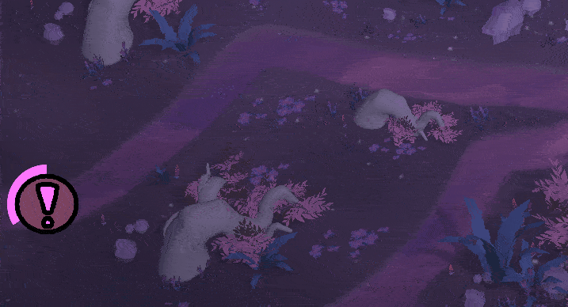

Shroom Defenders is a tower defence game made by second year students as a part of AIE's advanced diploma course. I was the tools programmer on this team.
The project requires defined wave durations, spacing of enemies, multiple defined spawn directions per wave, multiple types of enemies, as well as the ability to be hooked up to indicators that warn the player which direction enemies will come from. All of this is to be achieved in a way that is accessible to designers.
The above plan features dropdowns for selecting enemy types, as well as a selector for timing logic. With Previous will define that a batch of enemies spawns alongside the previous one, while After Previous will define that a batch will wait for the previous to end. Additional delay timers will be added for finer tuning of the waves.
29th June - 2nd July 2023
The first thing I wanted to get working was a sidebar that allows switching
between the waves the user would like to edit. This will allow the content
fields to be better seperated and contained, and hopefully allow for less
mental load on the designers.
The way it was implemented here is by containing a list of waves, along
with an index representing which is currently selected. The selected index
changes when a different wave button is clicked. Also included were Add and
Remove buttons which would create a new wave entry, or remove the most recently
created one, respectively.
The created data is stored in a custom asset file using Unity's in-built Scriptable
Objects. This will allow for the creation of multiple wave collections so multiple
designers can iterate on them at once if they wish, or support the need for multiple
levels should it arise. Also, the way removing a wave worked was revamped to allow
for any wave to be removed rather than simply the most recently created one.
Each wave's data is handled by a struct, which further contains structs for each batch of
enemies a wave could spawn. An enemy prefab would be specified, and along with that a user
can define the individual spacings between enemies, as well as between batches of them.
The idea for batches came about as a solution to how to group enemies such that a
designer can define a wave like the following example: 1x Strong Enemy, 5x Medium Enemies,
and 10x Weak Enemies, without the need to input each enemy seperately, or randomly
distribute between the enemy types.
19th September 2023
Up until this point for our proof of concept I had simply been instantiating enemies at t=0 on a spline and progressing them along it. This was fine for getting the idea across but the enemies were eventually going to use a flocking algorithm so a wave spawner was needed. I was to make a limited version for alpha that was for the most part technically complete, even if it needed to later be improved for use. Due to a lack of designer workpower on the project at the time considerations also needed to be made to ensure not a huge amount of tweaking would be needed.
The result of this was a system that allowed for the defining of which enemies would appear on a wave, the total amount of enemies the wave contained, and the duration the wave would last. Also a bit later the option was added to choose the direction enemies came from instead of it being random.
8th November 2023
Once time between other tasks allowed it I got to work on bringing the wave spawner up to date with the projects needs, and support the fact that there was now a designer wanting to balance the waves and finding the initial implementation too limiting.

This resulted in a system that allowed for almost all of my originally planned features. Batch grouping was one of the most interesting challenges, as the designers wanted to define waves duration in seconds instead of via enemy spacing. The way of solving this was by calculating an "effective" enemy count by grouping together batches that played in sync and adding the duration of each groups longest batch.
Overall this tool is something I am happy with and I was really glad to be able to provide it to the team. If I had more time I would have loved to implement timed delays between batches, as well as the planned cleaner interface.
I learned a lot from this experience, including the challenges of fitting a tool to designer requirements, needing to make creative decisions and problem solve new requirements as they cropped up, as well as how fitting such an integral tool's development into a project timeline looks.